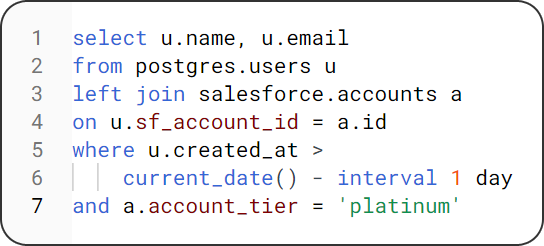

Trigger events with warehouse query results
Drive task automation from your source of truth using the SQL you love on a schedule that works.
Analysts pump out dashboard after dashboard, yet nobody looks at them. PDFs are auto-posted to Slack and Email every week, yet most see them as noise. A few popular charts influence operational teams, yet they repeat the same tasks every week.
Datadeeds encourages data teams and operational teams to collaborate on an end-to-end solution to tasks and data needs. By beginning with a consideration for the final outcome, analytical efforts can be directed
The automation platform where every workflow starts with data and ends with action. Datadeeds runs your SQL query on a schedule and emits a webhook when the query returns results.
